MSc Sports Business Management
Sep 2024 – Sep 2025Leeds Beckett University · Leeds, UK
Dissertation: "Human In Sports" (Distinction)
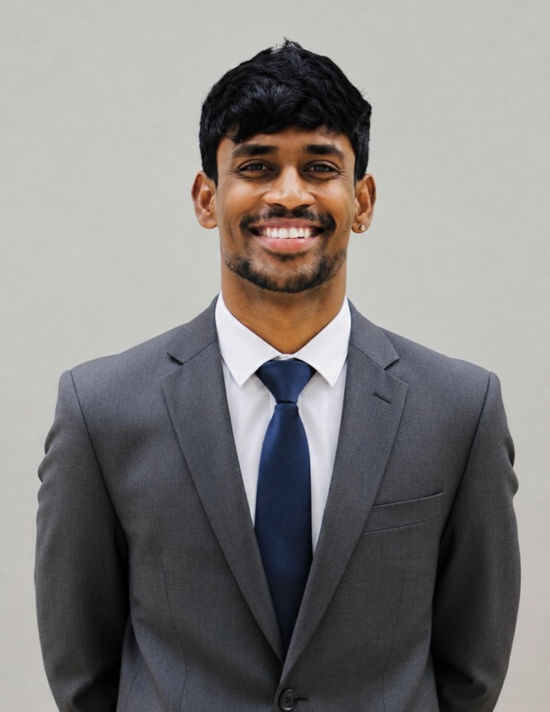
Hi, I'm
a sports marketing strategist, brand builder, campaign architect & partnership activator.
Sports Consultant
Get in touch
I've always believed that great sport isn't just played on the field. It's felt everywhere else too. The conversations it sparks, the moments people share, the way it can stop you mid-scroll and make you feel something. That's the space I've worked in for the past several years.
I'm Partha, a Sports Marketing professional with 7 years of overall experience across the biggest stages in the game. IPL seasons, ATP Finals, FIFA World Cups. I've led campaigns for JioCinema, Colors Cineplex, Sports18, Voot Select and Mumbai Indians across cricket, football, tennis, badminton, basketball and gaming.
The numbers are there. 230M+ video views, 2× Connected TV viewership for TATA IPL, campaigns spanning thousands of creatives across formats and platforms. But the work I'm most proud of sits behind those numbers. Stakeholder relationships built on data, not promises. Five accounts managed simultaneously. All retained.
I specialise in brand and account management, full-funnel digital campaigns, partnership activation and sports consultancy. In practice that means knowing when a client needs a strategy and when they need someone to tell them the strategy they have won't work. I carry the data for both conversations.
I've relocated to Dubai and I'm looking to bring that track record into the UAE market, whether that's account management, brand strategy, partnerships, or the wider business side of sport. I've already delivered work there: Sobha Realty × Arsenal in Dubai, Gulf Giants' ILT20 season, Colors Cineplex's Abu Dhabi T10 coverage, and the pitch that won Abu Dhabi Knight Riders for 2025. The pitch gets you in the game. The account is what keeps you on the pitch. If that's the kind of brief you're building, I'd like to be part of it.
Academic work that shaped how I think about sport, media, and building ventures that serve audiences mainstream coverage leaves behind.
Leeds Beckett University · Leeds, UK
Dissertation: "Human In Sports" (Distinction)
MET Institute of Mass Media · Mumbai, India
Mumbai University · Mumbai, India
Contact
Open to Sports Marketing, Brand Management and Consultancy roles across global organisations.
Global platforms, iconic teams and world-class leagues — managing brand presence end-to-end and executing campaigns that connected sport with culture across every major format and market.
Cricket, football, tennis, badminton, basketball, and wherever the next brief takes me. The job's always the same: turn a season, a launch, or a single moment into something people actually stop for. This is that work.
Select a category to explore the work
WPL 2024 was Mumbai Indians Women's second season in the league, and the goal was straightforward: give the team its own fanbase and identity, separate from the men's franchise, without losing the Mumbai identity that ties both together. That meant owning the calendar end to end: auction, pre-season, in-season, and post-season, not just content around match days.
The jersey launch also worked as a Skechers activation, so the retro-gaming look had a retail arm to it, not just a content one. Influencer partnerships around the auction and pre-season pulled in a younger, more casual cricket audience that doesn't usually follow a women's franchise account. Content around match days and player reveals performed well with a UAE audience too, especially the CGI and hero graphics work. That performance became a key reference point the following year, in a pitch that won new business off it.
SA20 2024 was MI Cape Town's chance to become more than a Mumbai Indians offshoot. The goal was to give the franchise its own character, rooted in the city and its culture, while still building on MI's existing global following.
Cross-property moments with Mumbai Indians helped Cape Town's story travel well beyond South Africa. The content was built to work globally, but the strongest engagement consistently came from three markets: South Africa, India, and the UAE, where MI's fanbase follows every affiliated team closely. That reach kept the franchise part of the conversation for the full season, not just around match days.
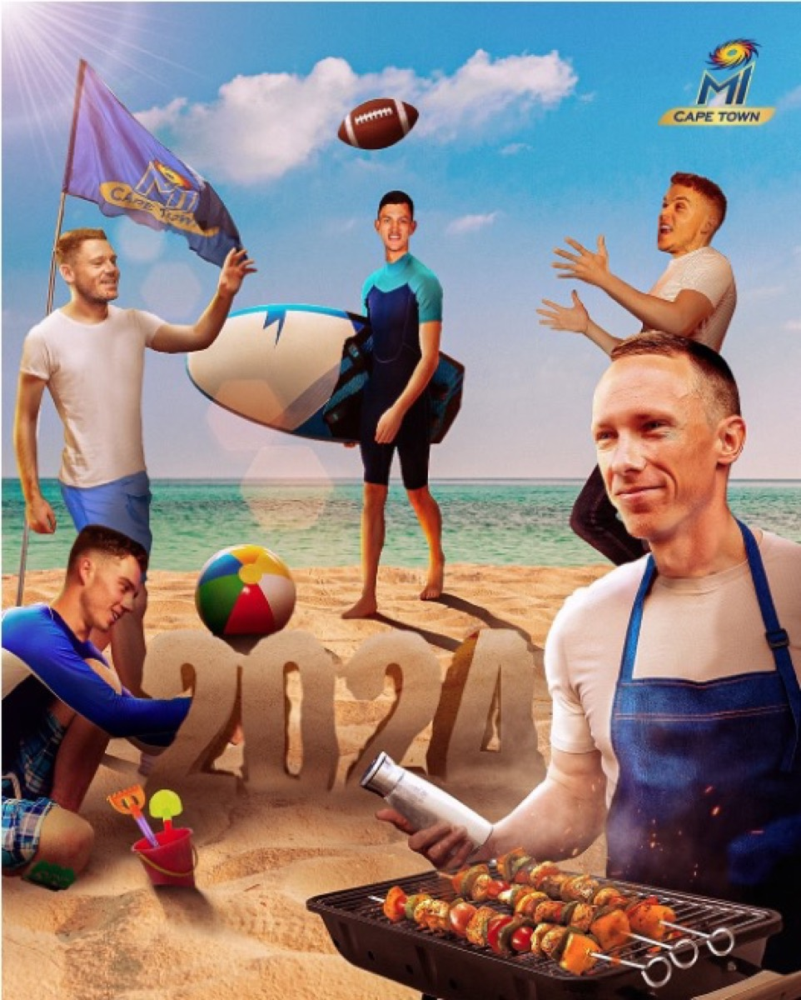
Two IPL seasons meant two chances to make JioCinema look like the platform advertisers and audiences would choose over TV. The brief covered performance creative for app installs and CTV viewership across India and the UAE, plus the B2B communication needed to keep partners and advertisers confident in the platform.
The #ViralWeekends influencer programme was the clearest sign the strategy worked outside pure cricket circles — the TSBI-produced shoots pulled in 50M+ views once they aired on JioCinema's platforms, reaching viewers who don't normally follow cricket at all. On the B2B side, the same regional-language communication that ran through the season carried into advertiser and trade conversations across both years, and by the end of IPL 2023 the CTV and ad-spot numbers were strong enough that JioCinema stopped looking like the challenger and started looking like a real alternative to linear TV.
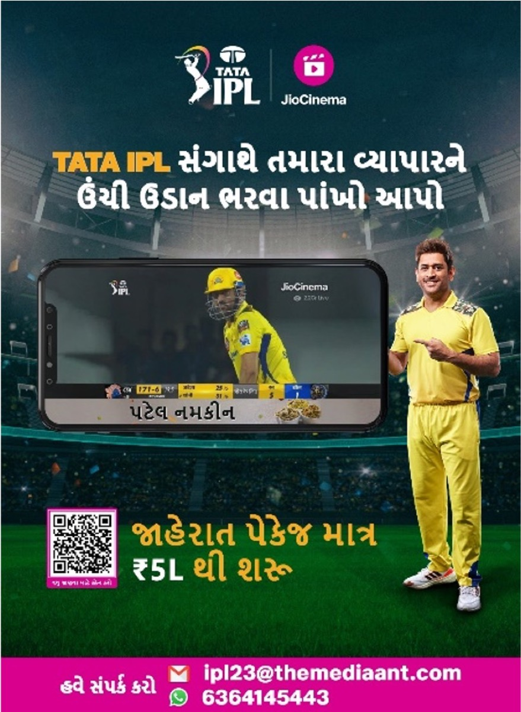
DHL's partnership with Mumbai Indians had one obvious risk: fans scroll past sponsor logos. The brief was to turn that logo into content people would actually stop for, across the WPL and IPL calendars — and to do it in a way that worked for MI's audience wherever it actually lives, from India to diaspora hubs like the UAE, the UK, and Australia, where a global logistics brand like DHL already has a footprint of its own.
By the end of the two seasons, DHL had stopped being just a logo on the shirt and become a familiar part of the MI conversation — helped by the fact that MI's audience, like DHL's own operations, isn't confined to India. A large share of that fanbase watches from the UAE, the UK, and Australia, where Indian cricket communities follow every MI season closely, which is exactly the overlap a global logistics brand needs to make a domestic-feeling sponsorship pay off internationally.
MI Shop's problem was simple: nobody buys merchandise from a team that isn't playing. The brief was to make peak IPL conversion even stronger, then find a way to keep the shop selling through the long off-season when there's no match-day energy to borrow from.
The combined approach kept MI Shop visible across the full year, not just the IPL window. In-season creative drove conversion at peak, and off-season campaigns kept sales moving through months that usually go quiet. The UAE market responded especially well to the MI Family bundle. With creative built specifically for that audience, UAE sales came in 30% higher than the previous year, proof that the same approach driving results at home could work just as well for a market that cared about MI just as much.
Team India went into the 2023 World Cup semi-final unbeaten, and the match itself landed in Mumbai, MI's own city, against New Zealand. That was too good a moment to leave alone: the brief became welcoming the national squad into MI's home turf with a CGI film built around "tere gali mein," in your own street, aimed at fans watching in India and well beyond it. None of this was in the season's original contract, so pitching it, selling it to the client, and following it with two more ideas across the tournament became a straight upsell win.
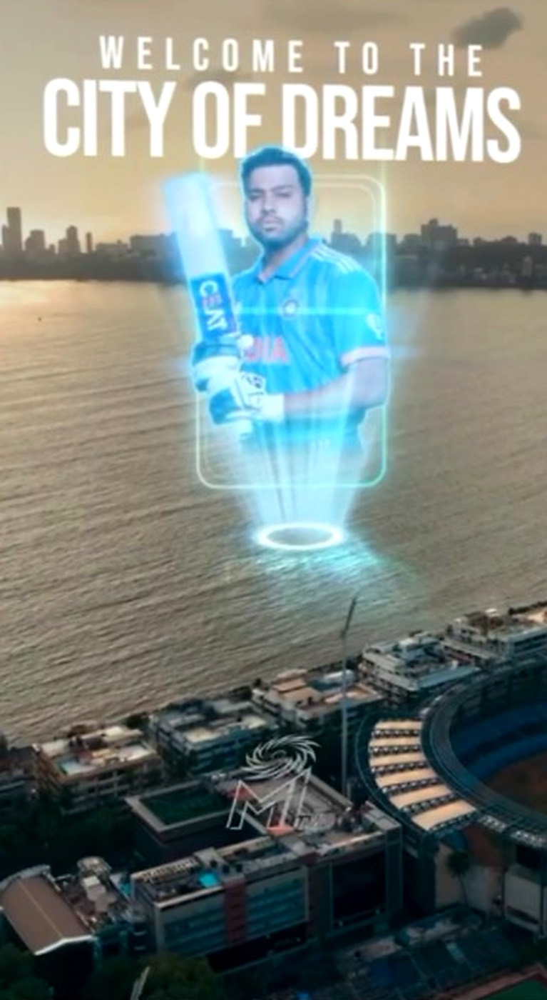
None of these three ideas were in MI's original scope for the year, so each one had to be pitched and sold on its own before it became a deliverable. The CGI film did the heaviest lifting, becoming one of MI's most-shared posts of the tournament, and that early performance made the next two pitches an easier sell. Landing all three inside one World Cup window added a real revenue line to the account that hadn't existed before the tournament started.
Account lead on Colors Cineplex during RSWS 2022, turning social into a steady feeder for a broadcast built primarily for the Indian audience. The work leaned entirely on content TV couldn't carry: player access, ground-level footage, and off-field creator chats that gave fans a reason to follow the channel beyond match nights.
Player access, GoPro intimacy, and influencer reach made RSWS 2022 one of the channel's strongest social windows of the year. A smaller, quieter thread of that same work also reached UAE audiences, pointing them toward Colors Cineplex's own social pages as somewhere to check for real-time updates and player content, well ahead of Abu Dhabi T10 later that year, even though that tournament's UAE broadcast sat with a different local channel entirely.
Abu Dhabi T10 was a new format trying to build the kind of following IPL took a decade to earn, and Colors Cineplex carried the broadcast in India, the single biggest market for growing that. The league's audience in the UAE mattered just as much, and Colors Cineplex built its social channels into the place fans went for live updates, hero highlights, and player interviews around the league, in India and the UAE alike.
Exclusive player content and influencer promotion carried a lot of this campaign, and it worked in two directions. In India, it helped a brand-new format get sized up fairly against the IPL. In the UAE, it gave fans a reason to keep coming back to Colors Cineplex's page for updates and player access around the league. Engagement landed around 30% above what was projected going in, which said less about one big viral moment and more about a channel that had actually built an audience of its own around the league.
Season 2 of ILT20 needed Gulf Giants to show up differently. As account lead across the team and its ownership brand, Adani Sportsline, the brief was to turn the season-opener film into a real statement of arrival, not another fixture-list teaser, and get it in front of the widest possible audience across the UAE and cricket's wider fanbase before a single ball was bowled.
The hero film became the anchor for the entire ILT20 2024 season, not just the launch moment. Every piece of match-day content, partner activation, and player-led post that followed had a single story to build from, instead of starting from scratch each time a new asset went out. That consistency mattered as much to Adani Sportsline as it did to Gulf Giants, since the film had to work for a team brand and an ownership brand at the same time.
Sobha Realty and Arsenal are both big enough names that a standard sponsorship spot wouldn't have done either of them justice. The film needed to read as two global names arriving together, giving Dubai's skyline the same visual weight as Arsenal's own players, built to anchor a reveal event staged in the city itself.
The film opened the official reveal in Dubai, and everything that followed, Sobha Realty's own channels, Arsenal's global channels, and the wider press coverage, took its cue from that first cut. For two brands stepping into a partnership at this scale, getting that first impression right mattered as much as the deal itself, since it was the first thing either fanbase or the wider market actually saw of it.
Voot Select was carrying one of the busiest football catalogues on Indian OTT, three leagues plus every major tournament, against a real handicap: European football kicks off well past midnight in India. The job was to make Voot Select feel like the platform's own football home anyway, not just a stream of late-night fixtures.
#SuperChargedSunday ended up doing more than any single match build-up could. Trending on Twitter India put Voot Select's football coverage next to the day's biggest news and entertainment conversations, not just other sports content. That mattered across a calendar built entirely around leagues and tournaments that kick off well after midnight in India: the platform held its position as the country's home for global football even when the football itself was airing while most of the audience was asleep.
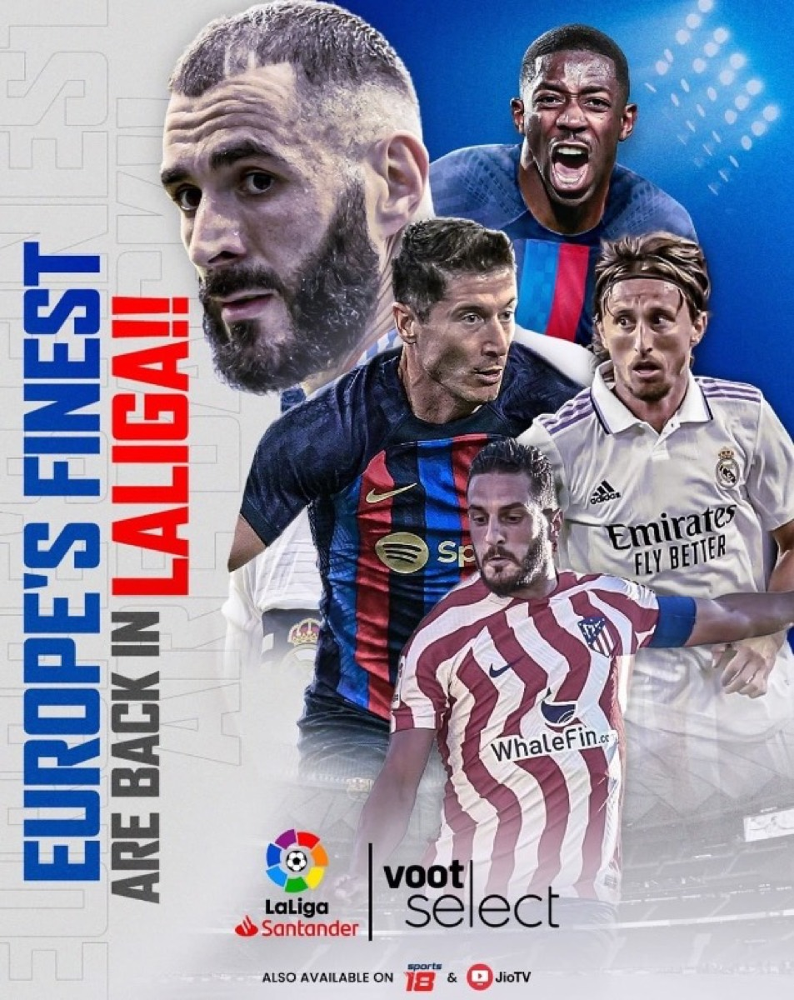
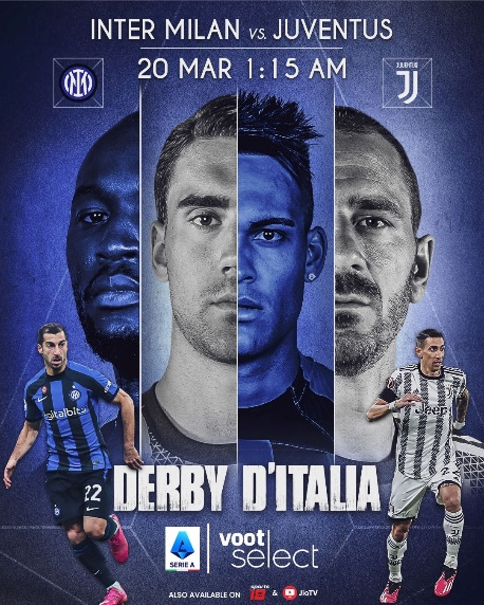
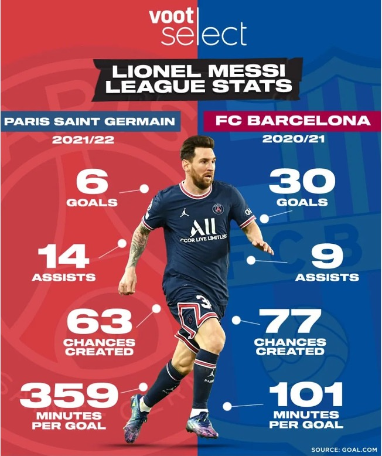
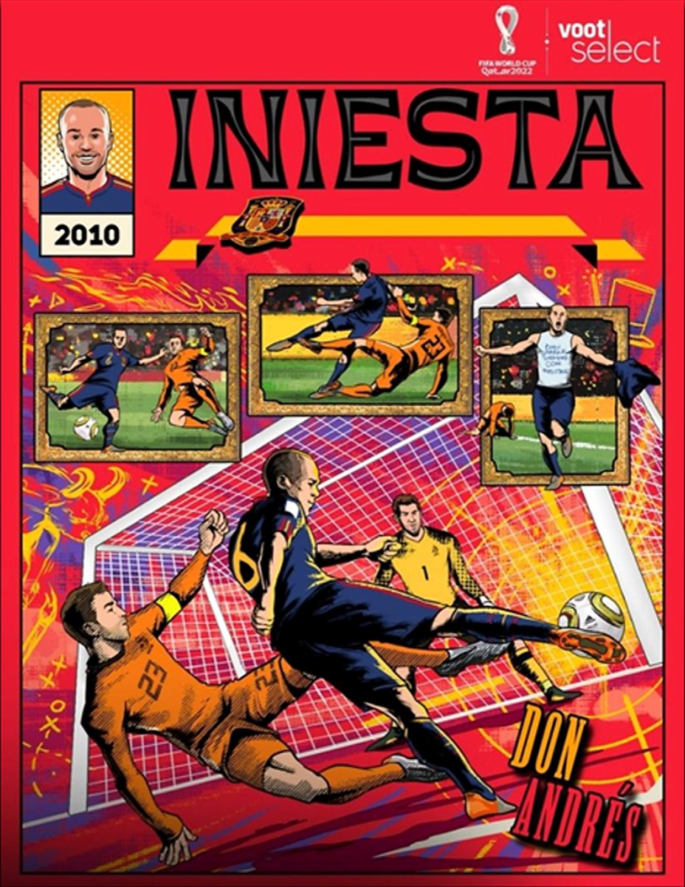
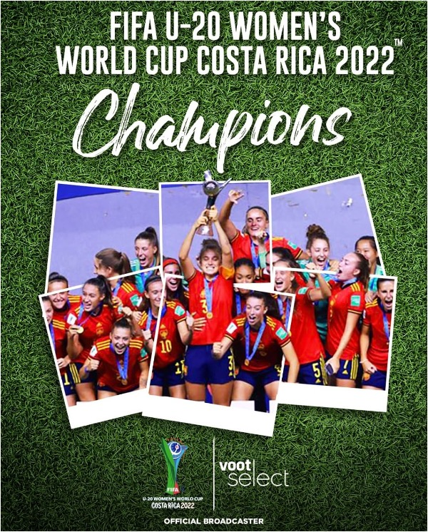
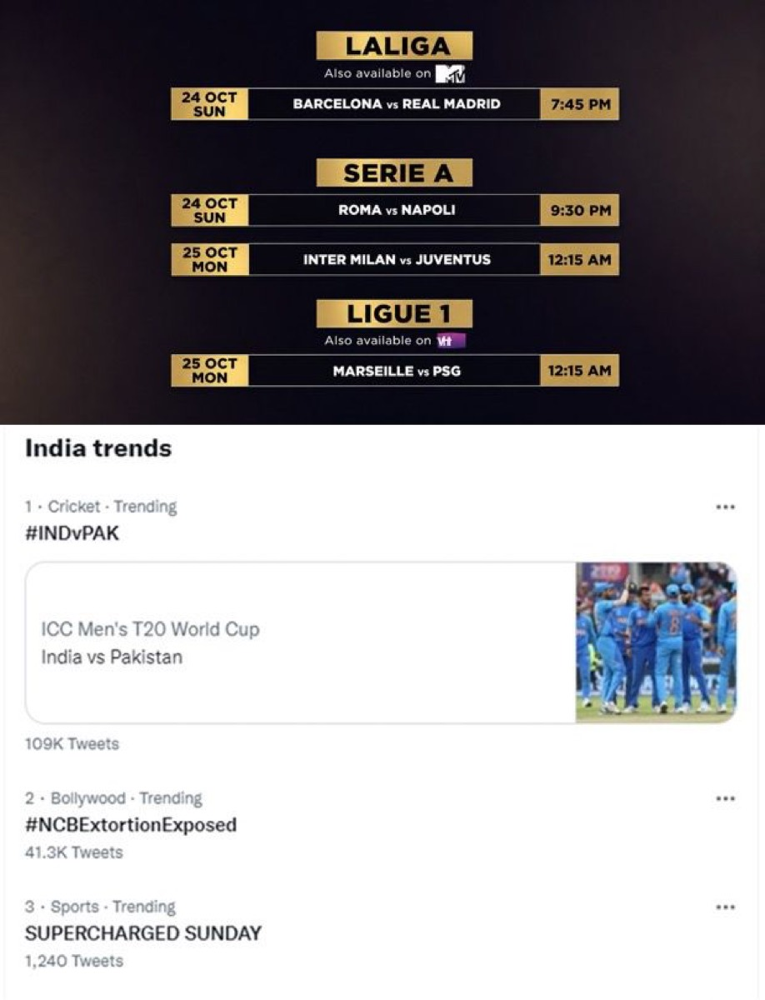
Most people who tuned into JioCinema for the 2022 World Cup were already football fans. The harder audience to win was everyone else, viewers who'd never watch a match by choice, and the plan to reach them ran through music rather than football itself.
The influencer covers did the heavy lifting on reach, pulling in engagement well past what a single anthem release could have managed on its own, and audience interaction landed meaningfully above benchmark for the campaign. That's what mattered here: a song turned into a shared moment gave JioCinema a piece of cultural ownership inside the World Cup window, and gave Indian fans who don't normally watch football a reason to feel closer to a tournament being played thousands of miles away.
Tennis in India has a loyal audience, but a small one, and it skews toward whichever legend is playing. The challenge for Voot Select was building a following that didn't disappear the moment Djokovic or Nadal weren't on court, one invested in the sport's future as much as its past.
Giving Alcaraz and Ruud the same creative weight as Djokovic and Nadal wasn't just fair, it was the point: fans who only followed the sport for its established stars had a reason to stay through matches involving the next generation too. That's what held the platform's position as a serious home for the ATP tour in India, rather than one that only came alive when a legend was on court.
Badminton doesn't usually get treated like a marquee sport on Indian OTT, it gets slotted in around the bigger broadcast properties. The job on Voot Select was to give it real weight anyway, right as a new generation of Indian players started genuinely competing for major titles rather than just making up the numbers.
India's Thomas Cup win did what individual tournament wins couldn't: it got badminton trending nationally, on a platform where the sport usually plays second fiddle to bigger broadcast properties. That moment, paired with a season of consistent player-led storytelling, turned casual tune-ins into an actual following, growth Voot Select doesn't typically see from a sport it wasn't leading with. By treating badminton with the same creative weight as its bigger properties, the platform held its position as a serious home for the sport through one of its most defining years in India.
NBA games in India air while most of the country is asleep, so the league's fandom here had to be built on everything except the live game itself: highlights, storylines, and one campaign big enough to make basketball feel like a cultural event rather than a niche one.
Ranveer Singh's involvement is what turned the All-Star campaign into the standout moment of the season, not the basketball content around it. Getting an actor with his following to physically show up on-court did more for reach than any highlight package could, and it's the reason the campaign held its own against India's biggest entertainment conversations on social during that week. That's the model that actually works for a league playing on the other side of the clock: lead with culture, and let the sport follow.
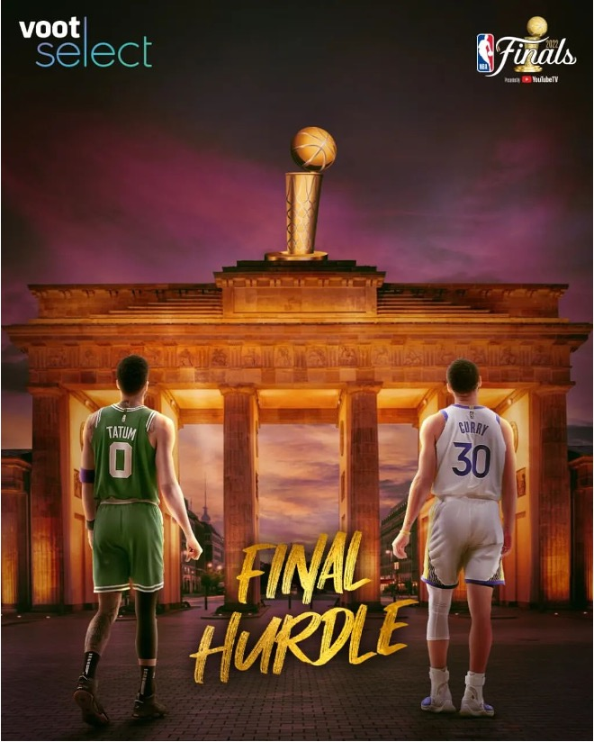
Neither do these numbers.
Numbers don't need convincing. Every figure here came from a campaign report handed directly to a client or stakeholder — and every single one came back. 100% client retention across five years, plus new business won through pitches including Abu Dhabi Knight Riders. Retaining business by delivering on the brief is what account management actually means, and this is what that looks like.
Human In Sports — a digital-first sports media venture addressing the under-5% coverage gap for women, para-athletes and non-traditional sports.
Seven years inside the sports industry surfaced the same gap everywhere: athletes in futsal, handball, athletics and para-sports competing with limited facilities, minimal sponsorship and almost no media coverage, while cricket and football absorb most of the attention and investment. Human In Sports was built as a business case for closing it.